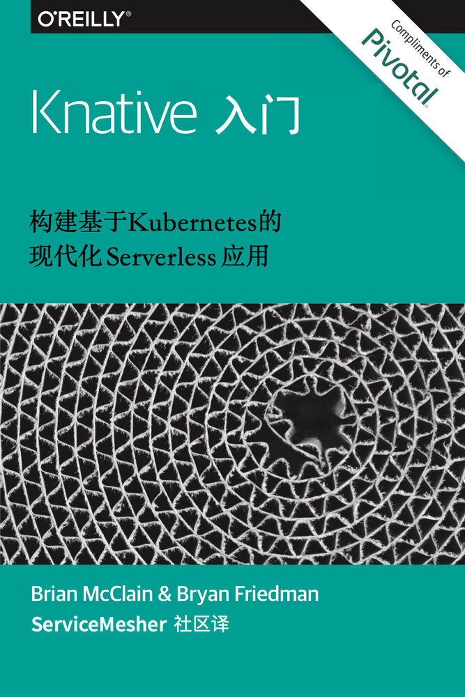

译者：陈佳栋、宋净超、孙海洲、徐鹏、邱世达
Knative 是一个基于 Kubernetes 的，用于构建、部署和管理现代 serverless 应用的平台。Getting Started with Knative 是一本由 Pivotal 公司赞助 O’Reilly 出品的电子书，本书中文版由 ServiceMesher 社区自发翻译，从今天起 ServiceMesher 社区将陆续为大家推出本书的中文译文。

前言
Kubernetes 赢了。这不是夸大其词，事实就是如此。越来越多的人开始基于容器部署，而 Kubernetes 已经成为容器编排的事实标准。但是，Kubernetes 自己也承认，它是一个容器而不是代码平台。它可以作为一个运行和管理容器的很好的平台，但是这些容器是如何构建、运行、扩展和路由很大程度上是由用户自己决定的。这些是 Knative 想要补充的缺失部分。
也许你已经在生产上使用 Kubernetes，或者你是一个前沿技术爱好者，梦想着将你基于 OS/2 运行的组织现代化。不管怎样，本报告都没有假定太多东西，只是要求您知道容器是什么，具有 Kubernetes 的一些基本知识，可以访问 Kubernetes 集群。如果这些您都不具备的话，那么 Minikube 是一个很好的选择。
我们将使用大量代码示例和预先构建的容器镜像，这些镜像我们都为读者开源，您可以从 http://github.com/gswk 找到所有代码示例，并在 http://hub.docker.com/u/gswk 找到所有容器镜像。您还可以在 http://gswkbook.com 找到这两个存储库以及其他重要参考资料的链接。
目标读者
我们本质上是开发人员，所以这份报告主要是针对开发人员编写的。在整个报告中，我们将探索 serverless 架构模式，并向开发人员展示自服务用例示例（例如构建和部署代码）。然而，Knative 吸引了不同角色的技术人员。特别是，将 Knative 组件作为更大平台的一部分或与他们的系统集成的想法会引起运维和平台构建者们的极大兴趣。当这些受众探索如何使用Knative 来实现其特定目的时，本报告将对他们非常有用。
你将学到什么
尽管本报告并不旨在详解 Knative 的全部功能，但已足够深入，可以带您入门 Knative，了解它的工作原理和使用方式。初步了解了 Knative 后，我们将花一些时间研究如何使用它的每个主要组件。然后转到一些高级用例，最后通过构建一个真实的示例应用来结束，该应用将充分利用您在本报告中学到的所有知识。
Knative 概述
我们有一个信念：以平台的方式提供软件是一个最佳选择。事实证明，标准化的开发和部署流程能让开发人员更专注于新功能的研发，从而减少时间和金钱上的消耗。不仅如此，确保应用程序之间的一致性也意味着其更容易打补丁，更新和监控，从而让运维工作也更加高效。Knative 的目标就是成为这样的现代化平台。
什么是 Knative
我们先来看看 Knative 的目标。Knative 的目标是在基于 Kubernetes 之上为整个开发生命周期提供帮助。它的具体实现方式是：首先使你作为开发人员能够以你想要的语言和以你想要的方式来编写代码，其次帮助你构建和打包应用程序，最后帮助你运行和伸缩应用程序。
为此，Knative 将重点放在三个关键组件上：build（构建）你的应用程序，为其提供流量serving（服务），以及确保应用程序能够轻松地生产和消费event（事件）。
Build（构建）
通过灵活的插件化的构建系统将用户源代码构建成容器。目前已经支持多个构建系统，比如 Google 的 Kaniko，它无需运行 Docker daemon 就可以在 Kubernetes 集群上构建容器镜像。
Serving（服务）
基于负载自动伸缩，包括在没有负载时缩减到零。允许你为多个修订版本（revision）应用创建流量策略，从而能够通过 URL 轻松路由到目标应用程序。
Event（事件）
使得生产和消费事件变得容易。抽象出事件源，并允许操作人员使用自己选择的消息传递层。
Knative 是以 Kubernetes 的一组自定义资源类型（CRD）的方式来安装的，因此只需使用几个 YAML 文件就可以轻松地开始使用 Knative 了。
| Kubernetes 知识 |
|---|
| 由于 Knative 是基于 Kubernetes 的一系列扩展，因此建议你先了解下 Kubernetes 和 Docker 的架构和术语。今后我们会提及以下术语，比如 namespace、Deployment、ReplicaSet 和 Pod。熟悉这些 Kubernetes 术语将帮助你在阅读时更好地理解 Knative 的基本工作。如果你对这些都不熟悉，那么这两个链接：Kubernetes 和 Docker 上都有很棒的培训材料，可以直接在浏览器上阅读。 |
无服务器架构（serverless）？
到目前为止，我们已经讨论了应用程序的容器化。但都2019年了，我们读了半章却还没有提到“无服务器架构（serverless）”这个词。也许作为当今技术中被提到最多的一个词，无服务器架构（serverless）仍然在寻找一个整个行业都能认同的定义。许多人都同意这个理念的影响最大的是代码量，比如以前需要编写大型、单一的应用程序，现在你只需编写通过事件来调用的小型、单一用途的函数即可。这些事件可以简单到是一个 HTTP 请求或一个来自消息通道（如 Apache Kafka）的消息。同时事件也可能是间接的，比如这些操作：将图像上传到 Google Cloud Storage或更新了 Amazon 的 DynamoDB 中的一张表。
许多人也都同意这表示着你的代码只在处理请求时才用到计算资源。对于很多托管服务来说，如 Amazon 的 Lambda 或 Google Cloud Functions，这意味着你只需要为活跃期间的计算服务付费，而不是一台7x24小时运行并可能在大部分时间内无所事事的虚拟机。在本地或非托管的无服务器架构（serverless）平台上，则表示代码可以只在需要时运行，在不需要时就停止，从而让你的基础设施能在其他方面自由使用计算资源。
在这些基础原理之上的是一场圣战。有些人坚持无服务器架构（serverless）只适合在托管的云环境中运行，在本地运行这样的平台完全是不对的。其他人则认为它更像是一种哲学理论上的设计。也许这些定义最后会合并，也许不会。就目前来说，随着无服务器架构（serverless）普及率的持续增长，Knative 最有可能成为其标准。
为什么是 Knative ？
除了关于无服务器架构（serverless）定义的争论之外，下一个逻辑问题是“为什么创造的是 Knative ？”随着基于容器的架构的流行和 Kubernetes 的普及，我们又开始见到一些相同的问题，这些问题之前也出现在平台即服务（PaaS）方案上并推动了其发展。如在构建容器时，我们该如何保证其一致性？谁负责给所有东西打补丁？如何根据需求来伸缩？如何实现零停机部署？
虽然 Kubernetes 确实已经演进并开始解决其中一些问题，但是之前提到的关于不断发展的无服务器架构（serverless）的概念方面产生了更多的问题。如何管理多个事件类型的一致性？如何定义事件源和目标？
许多无服务器架构（serverless）或函数即服务（FaaS）框架都尝试回答这些问题，但它们都在用不同的方式来解决问题，且不是所有的解决方案都用到了 Kubernetes。而 Knative 构建在 Kubernetes 的基础上，并为构建和部署无服务器架构（serverless）和基于事件驱动的应用程序提供了一致的标准模式。Knative 减少了这种新的软件开发方法所产生的开销，同时还把路由（routing）和事件（eventing）的复杂性抽象出来。
结论
现在我们已经很好地理解了什么是 Knative 以及它被创造出来的原因，接下来我们将进一步深入了解它。下一章将介绍 Knative 的三个关键组件。我们将详细研究它们，并解释它们是如何协同工作的，以及如何充分发挥它们的潜力。之后，我们将了解如何在 Kubernetes 集群上安装 Knative 和一些更高级的用例。最后，我们将通过演示一个 demo 来展示你能在这个报告中学习到的大部分内容。